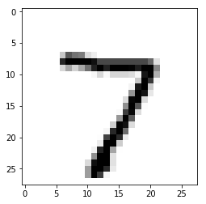

March 2019, ChangChun, JiLin
#SAT approximate counter
Using the ApproxMC with Bivariate Decomposition
July 2018, Gainesville, Florida
Face Recognition
Using openCV and face_model to implement the face detection and recognition
October 2017, ChangChun, JiLin
PageRank for sorting
Implement PageRank with C++ and sort the website